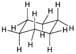
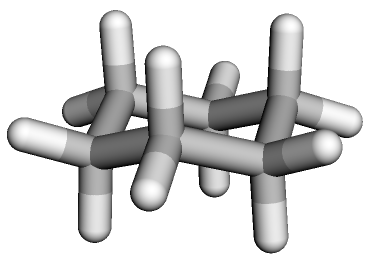

令和5年度 問4 有機化学及び燃料
シクロアルカンとその立体化学次の記述のうち、誤っているものはどれか。

①
シクロヘキサンの安定配座はいす形配座とよばれるひずみのない三次元構造をもち、すべてのC－C－C結合角が109.5°の四面体角に近く、隣接するC－H結合が完全にねじれ形となっている。
②
シクロヘキサンのいす形配座において、シクロヘキサン環に付いた置換基には2種類の位置、アキシアル位（環に垂直、椅子の軸に平行）とエクアトリアル位（環の赤道周りで環のおおよその平面にある）がある。
③
cis －1, 2－ジメチルシクロヘキサンの2つのいす形配座は、エネルギー的に等価である。
④
シクロヘキサンはいす形配座の他に、舟に似ている立体配座がある。この舟形シクロヘキサンには角ひずみはないが、重なり形の相互作用が多くあり、いす形シクロヘキサンに比べて不安定である。
⑤
trans －1, 2－ジメチルシクロヘキサンは2つのメチル基がともにアキシアルの立体配座の方が、ともにエクアトリアル配座よりも安定である。
正答
⑤ trans －1, 2－ジメチルシクロヘキサンは2つのメチル基がともにアキシアルの立体配座の方が、ともにエクアトリアル配座よりも安定である。
シクロヘキサンは立体構造を説明するときに取り上げられる代表的な分子です。炭素同士の結合角がsp3炭素の理想の結合角109.5°四面体角に近くなるよう、安定ないす形配座をとります。

シクロヘキサンに結合する水素原子や置換基は、環に対し垂直なアキシアル位と平行（平面）なエクアトリアル位の2種類に分けられます。
更に、ジメチルシクロヘキサンのような2置換シクロヘキサンには、環の平面に対し同じ側を向いているシス体と異なる方を向いているトランス体の2種類も存在します。ただし両方アキシアル位だからシス体というわけではなく、環の上下どちらかにあるかに注目します。構造上、シス体・トランス体それぞれにアキシアル・エクアトリアルが交互に3つずつあります。
アキシアル位に置換基がある場合、隣の置換基と立体的に干渉してしまい構造的にひずんでしまいます（1,3－ジアキシアル相互作用）。そのためアキシアル位よりもエクアトリアル位に置換基がある方が安定化します。5番が誤りです。